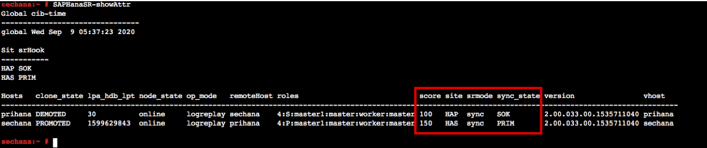
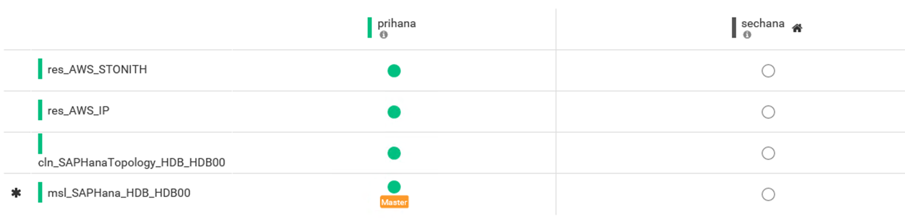
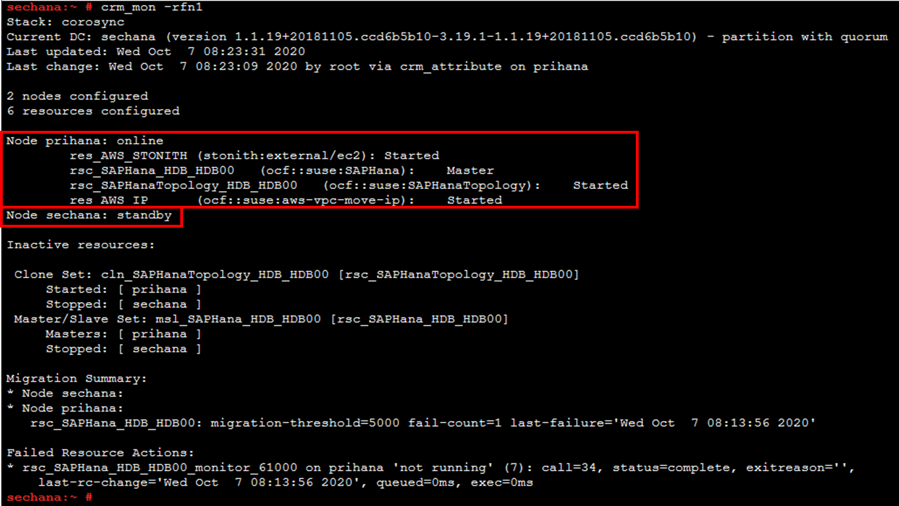
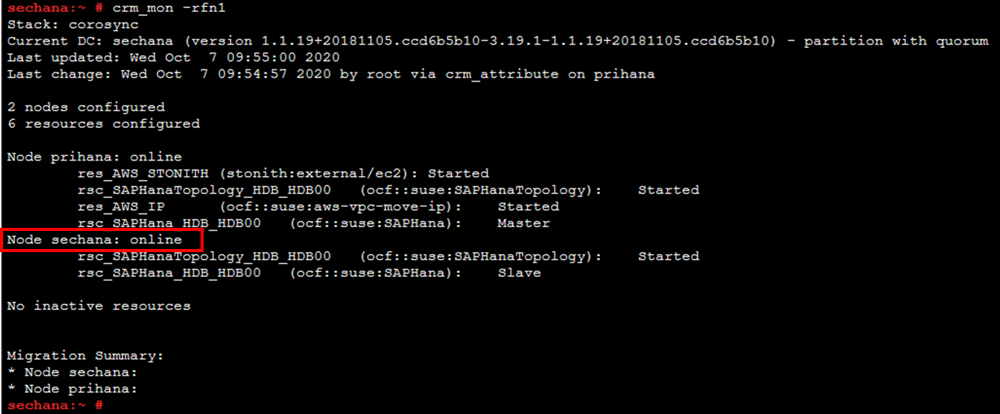
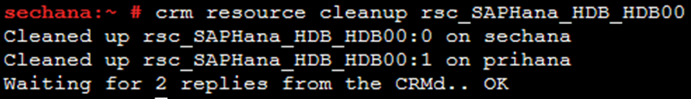

Task 02. Take a node offline
이 실습에서는 클러스터 노드에서 실행중인 모든 클러스터 서비스를 보조 노드로 자동 마이그레이션되도록 클러스터 노드를 대기 상태로 만드는 방법을 보여줍니다.
Taking a node offline
테스트 시나리오

-
Bastion Host에 접속해서 HAWK 웹의 Dashboard를 확인합니다(Lab02 참고)
- Overlay IP Resource가 sechana로 넘어 간것을 확인하실 수 있습니다.

- Overlay IP Resource가 sechana로 넘어 간것을 확인하실 수 있습니다.
-
sechana 에 들어가서 Cluster 및 HSR 상태를 확인합니다.
-
EC2 Instance Console에 접속 합니다.
-
HANA-HDB-Secondary 인스턴스를 선택하고, Connect 버튼을 누릅니다.

-
Session Manager 를 선택하고, Connect 버튼을 누릅니다. Session Manager를 통해 sechana 인스턴스에 접속합니다.

-
Cluster의 상태를 체크 합니다.
- crm_mon 은 Cluster의 현재 상태를 제공하는 명령어 입니다.(root 유저사용)
- 아래 명령어를 수행하여 sechana 가 Master 상태인지 확인 합니다.
sudo su - crm_mon -rfn1
-
SAP HANA System Replication (HSR) 상태 체크를 합니다.
- SAPHanaSR-showAttr 사용하여 prihana node가 SOK 확인 합니다.(root 유저사용)
sudo su - SAPHanaSR-showAttr
-
아래 명령을 실행하여 Node2 (sechana)를 대기 모드로 설정합니다. (root 유저사용)
sudo su - crm node standby sechana
클러스터는 Primary SAP HANA 데이터베이스를 중지하고 시스템 복제 동기화가 수행된 경우 Secondary 사이트(Task 01을 정상적으로 수행한 경우 prihana)로 TakeOver를 처리합니다. Secondary 사이트(prihana)가 완전히 새로운 Primary가 될 때까지 기다립니다.
-
Bastion Host에 접속해서 HAWK 웹의 Dashboard를 확인합니다(Lab02 참고)
- Overlay IP Resource가 prihana로 넘어 간것을 확인하실 수 있습니다.

-
Node2 (sechana)에서 리소스가 Node1 (prihana)로 마이그레이션될 때까지 Cluster의 상태를 체크 합니다.
- crm_mon 은 Cluster의 현재 상태를 제공하는 명령어 입니다.(root 유저사용)
- 아래 명령어를 수행하여 prihana 가 Master 상태인 지 확인합니다.
- sechana 노드가 standby 상태임을 확인합니다.
sudo su - crm_mon -rfn1
-
Cluster Node2(sechana)를 온라인으로 설정 (root 유저사용)
sudo su - crm node online sechana -
Cluster Node2(sechana)가 온라인이 될 때까지 Cluster의 상태를 체크 합니다.
- crm_mon 은 Cluster의 현재 상태를 제공하는 명령어 입니다.(root 유저사용)
- 아래 명령어를 수행하여 sechana 가 online 상태인지 확인 합니다.
sudo su - crm_mon -rfn1
-
SAPHana resource 상태를 cleaned up 해줍니다.
crm resource cleanup rsc_SAPHana_HDB_HDB00